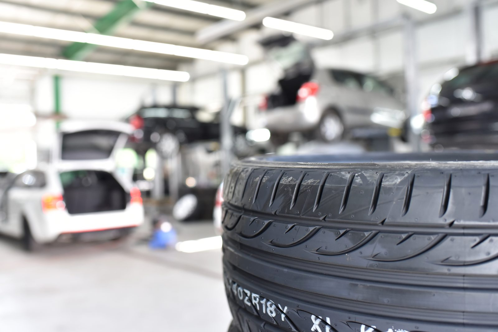

2004
im Reifen- &
Felgengeschäft
Felgengeschäft
Reifen, Felgen und Fahrzeugservice in Chemnitz – vom Zweirad bis zum LKW. Fahrzeughof & Reifenservice Uhlig ist Ihr Partner für neue Reifen, Stahl- und Alufelgen, gebrauchte Felgen und Kfz-Ersatzteile – dazu Altfahrzeugankauf, Altradentsorgung und Kfz-Schrottankauf.
Leistungen
Von neuen Reifen und Felgen bis zur Fahrzeugverwertung · bei Fahrzeughof & Reifenservice Uhlig bekommen Sie alles aus einer Hand. Bewährt, fair, seit 2004.
Neue Reifen für jede Jahreszeit · vom Zweirad bis zum LKW, auf Wunsch montiert und auf Ihr Fahrzeug abgestimmt.
Neue und gebrauchte Stahl- und Alufelgen · unser Steckenpferd ist die Werterhaltung gebrauchter Stahlfelgen seit 2004.
Verkauf gebrauchter und neuer Kfz-Ersatzteile aus unserer eigenen Fahrzeugverwertung.
Wir zahlen einen fairen, marktüblichen Preis und kaufen komplette Altfahrzeuge an · Abholung je nach Entfernung möglich.
Kostengünstige Altradentsorgung für jedermann · durch aufwändige Sortierung zu unschlagbaren Preisen.
Kfz-Schrottankauf zu aktuellen Tagespreisen · als zertifizierter Altfahrzeug-Demontagebetrieb.

Seit 2004Werterhaltung gebrauchter Stahlfelgen
Seit 2004 ist die Werterhaltung gebrauchter Stahlfelgen unser Steckenpferd. Mit rund 80 Radkatalogen verschiedener Hersteller · vom Nachschlagewerk aus 1936 bis zum aktuellen Alcar-Katalog · ordnen wir Felgen und Fahrzeuge eindeutig zu. Pro Jahr durchlaufen mehrere tausend auf Rundlauf geprüfte Gebrauchtfelgen unser Unternehmen.
Warum Fahrzeughof & Reifenservice Uhlig
Kurze Wege, ehrliche Beratung und ein Team, das Räder und Fahrzeuge kennt. Bei uns wissen Sie immer, woran Sie sind.

Ihre Anfrage
Sagen Sie uns Ihr Anliegen · wir machen Ihnen ein faires Angebot, ob neue Reifen, Felgen, Ersatzteile oder Altfahrzeugankauf. Schnell und unkompliziert.
Kontakt
Rufen Sie an oder schicken Sie uns Ihre Anfrage direkt über das Formular. das Team vom Fahrzeughof Uhlig meldet sich schnellstmöglich zurück.
Ihre Anfrage ist eingegangen. das Team vom Fahrzeughof Uhlig meldet sich schnellstmöglich bei Ihnen.